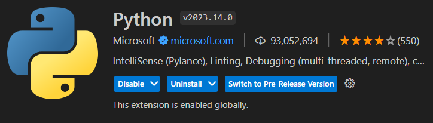
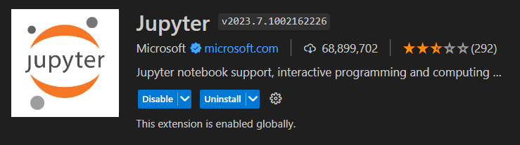
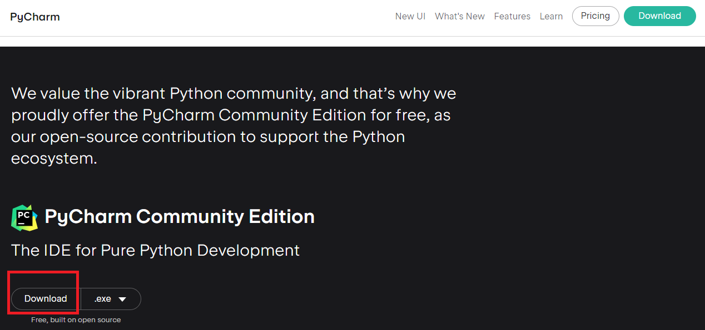

A témakör célja, hogy megismerkedjünk a Python-nal. Néhány alapvető fogalommal tisztában legyünk. És felfedezzünk néhány olyan internetes felületet, amelyek a későbbiekben nagyon hasznosak lehetnek a számunkra.
- Mit lehet tudni alapvetően a Python-ról?
- Mit kell a gépünkre telepíteni, hogy Python-ban tudjunk programozni?
- Maga a Python, amit a python.org honlapról tudunk letölteni.
- Egy IDE, amely lehet a már megismert Visual Studio Code, csak telepíteni kell még néhány kiterjesztést (extension).
- Vagy használhatjuk a pycharm download community oldalról letöltött és beállított PyCharm fejlesztői környezetet is. Ehhez le kell egy kicsit görgetni a weboldalon!
A nyelvet Guido van Rossum alkotta meg 1991-ben.
A Python egy objektumorientált (object-oriented) scriptnyelv, azaz kell egy értelemező (interpreter) a futtatáshoz. A nyelv, egy bőséges könyvtár valamint nyelvi referencianyag is ingyen elérhető a nyelv honlapján.
Dinamikus típusolása (dynamic typing) van, azaz a változók típusát az értelmező dönti el, nem mi deklaráljuk.
A nyelv modulokban (module) gondolkodik, melyek segítségével jobban tudjuk szervezni a kódunkat. Ilyen modulokat mi is írhatunk (valójában minden Python állomány egy modul), de számos beépített modul van a nyelven belül is (math, random stb.).
A Python állományok kiterjesztése ".py".
A Python legfrissebb verziójának a száma 3.
Hogy milyen előnyei vannak a Python-nak és mire használható, abba ez az oldal nyújt egy kis betekintést.
Két dolog szükséges hozzá.

Ha már telepítettük a python-t és elindítottuk a Visual Studio Code-ot, hozzunk létre benne egy üres .py állományt és mentsük el. Ekkor alapból felajánlja a gépre telepített python-nal kapott interpretert . Fogadjuk el! Ha nem települt volna, akkor állítsuk be a következőket:




Néhány videó a beállításokhoz!